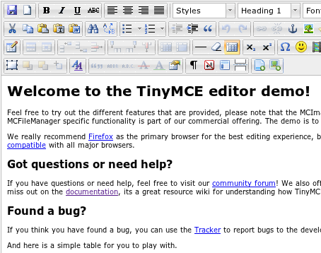

Το μεγαλύτερο ποσοστό του διαδικτίου παράγει περιεχόμενο μέσω ενός WYSIWYG. Αυτό είναι μαλακία. Δεν ξέρω αν υπάρχει καλύτερη λύση, δεν με νοιάζει. Ξέρω ότι η παρούσα λύση δεν είναι ικανοποιητική.
Ξεκαθαρίζω ότι σε αυτό το post μιλάω για WYSIWYG που χρησιμοποιούμε για να γράφουμε άρθρα σε CMS και Blog. Όχι dreamweaver και παρόμοια (επίσης τραγικά).
Για noobs
WYSIWYG is an acronym for What You See Is What You Get.
με εικόνα:

Οι editors αυτοί δημιουργήθηκαν κατ' εικόνα και καθ' ομοίωσιν του MS Word - που όλοι οι άνθρωποι ξέρουν να χειρίζονται. Έτσι γεφύρωσαν το χάσμα ανάμεσα στον άνθρωπο και την html. Ακόμα και κάποιος που ξέρει html δεν θα ήθελε να γράφει τα κείμενα του με html. Είναι πολύ βαρετό.
Γιατί είναι μαλακία για τον χρήστη;
Στην ιδέα, αυτοί οι editors είναι πολύ καλοί. Γράφεις σαν να γράφεις στο Word που το ξέρεις από τότε που έκανες την πρώτη σου εργασία στο σχολείο και αυτό αναλαμβάνει να γράψει τον απαραίτητο html κώδικα.
Ε αυτό δεν συμβαίνει έτσι ακριβώς. Οι πελάτες μου που δεν είναι εξοικειωμένοι με το διαδίκτυο τα κάνουν όλα μπουρδέλο αν τους αφήσεις μόνους τους στον Tinymce για πάνω από 10 δευτερόλεπτα. Δεν συζητάμε για το copy paste!
What I failed to realize at the time is that "the best WYSIWYG editor" is like saying "the best politician", in that it is the "least worse" of a flawed solution. - Albert Bori
Ακόμα και τα 10 plugins που χρειάζεται να χρησιμοποιήσεις για να γίνει δουλειά, όπως τα copy from word ή το remove format, δεν λειτουργούν όπως θα περίμενες. Και γενικά, τίποτα δεν λειτουργεί όπως θα περίμενες. Προσωπικά όταν γράφω σε WYSIWYG νιώθω μια διαρκή ανασφάλεια για τη δομή του κειμένου μου.
Γιατί είναι μαλακία για το μηχάνημα;
Πέρα λοιπόν από τη δυσχρηστία τους, ένα άλλο τραγικό είναι ότι παράγουν πολύ κακό html κώδικα, κενά p tags, κενά div και ότι άλλο σκουπίδι παρασύρουν οι συντάκτες κατά τη συγγραφή. Αυτό αυξάνει δραματικά τις πιθανότητες η τελική σελίδα να έχει html validation errors, δηλαδή να χαλάσει η δομή του Dom tree, που έχει ως αποτέλεσμα να κάνει κακό στο SEO και στην ταχύτητα που ανοίγει η σελίδα, που έχει ως αποτέλεσμα να πάνε όλοι οι κόποι του developer στα σκουπίδια. Εντάξει μακάρι να είναι αυτά τα προβλήματα μας στη ζωή αλλά καταλαβαίνετε που το πάω.
Όλα αυτά είναι λογικά όταν ζητάς από ένα πρόγραμμα να δίνει πολλές δυνατότητες (tables, image resize, font color) αλλά να παράγει αυστηρό κώδικα (no spans and divs). Ή να παίρνει πρωτοβουλία σε κάποια ζητήματα (ναι κι άλλο bullet) και να μην παίρνει σε κάποια άλλα (όχι άλλο γαμημένο bullet αααααα! βάλε bold, φτάνει, back, undo, που πήγε το bold αααααααα!).
Λύση στο μέγα πρόβλημα του input;
Δεν έχω καμία ιδέα για το τι θα έκανε καλύτερους τους WYSIWYG. Εδώ στο Webz έχω βάλει τον markitup editor και γράφουμε με markdown. Το markdown είναι πολύ πιο βολικό.
- Αρχικά επειδή δεν είναι WYSIWYG. Είναι σκέτο κείμενο. Δεν μπορείς να κάνεις μαλακία όσο και να προσπαθείς.
- Υποστηρίζει τα περισσότερα πράγματα που θα θες να κάνεις σε ένα κείμενο. Αλλά αν κάτι δεν το υποστηρίζει μπορείς να το κάνεις με html καθώς δεν έχει πρόβλημα μαζί της.
- Μπορείς να κάνεις copy paste τα πάντα και θες δεν θες σκάνε unformatted.
- Δεν χρειάζεται καν editor για να γράψεις markdown αλλά βολεύει σε κάποια πραγματάκια να έχεις.
Για τους πελάτες μπορεί στην αρχή να είναι λίγο παράξενό όταν θα πρέπει να κάνουμε αυτό για να έχουν bold:
**bold**
Αλλά πραγματικά το learning curve είναι αστείο και πολύ μικρότερο από το πραγματικό learning curve ενός WYSIWYG. Φαινομενικά στην αρχή οι WYSIWYG φαίνονται απλοί αλλά στην πορεία αλλάζει αυτό.
Shift+enter για μια απλή γραμμή; Go away...